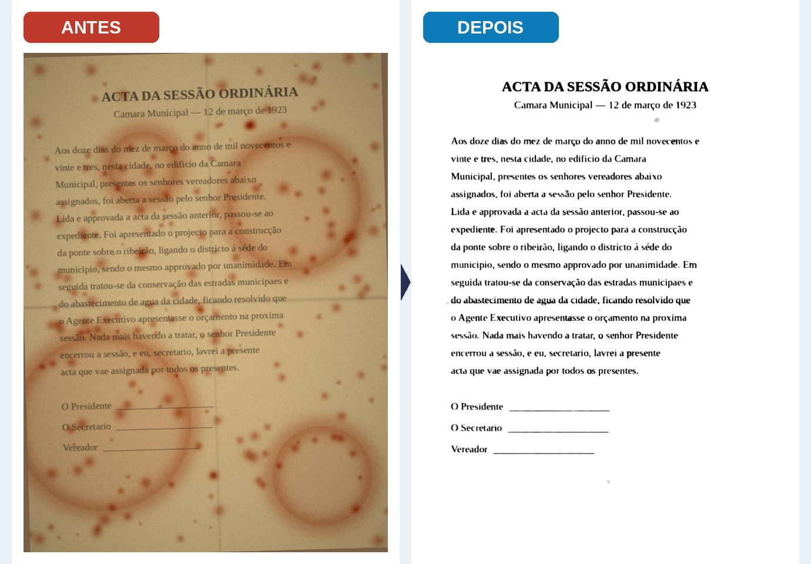
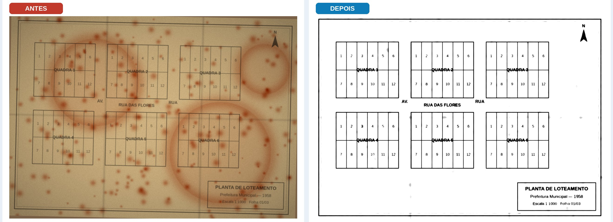

| OBJETO | PREÇO POR PÁGINA | ESTIMATIVA PARA IBIÁ |
|---|---|---|
| Restauração digital do acervo documental com entrega da página restaurada e do texto transcrito, acesso seguro e exportação | A0: R$ 7,00 A3: R$ 0,75 por página |
10 mil páginas: R$ 7.500 a R$ 70.000 50 mil páginas: R$ 37.500 a R$ 350.000 conforme o formato |
| 1 | Apresentação e resumo |
| 2 | Por que restaurar: benefícios para o município |
| 3 | O que é restauração digital |
| 4 | Como funciona |
| 5 | O processo passo a passo |
| 6 | Controle de qualidade |
| 7 | Qualidade: antes e depois |
| 8 | O que a Prefeitura recebe |
| 9 | No dia a dia: exemplos de uso |
| 10 | Preço por página |
| 11 | Estimativa para Ibiá |
| 12 | Etapas e prazos |
| 13 | Segurança e LGPD |
| 14 | Por que a DigitalGov |
| 15 | Perguntas frequentes |
| 16 | Condições comerciais |
| 17 | Aceite e assinaturas |
A DigitalGov apresenta à Prefeitura Municipal de Ibiá esta proposta de restauração e digitalização do acervo documental. Prefeituras guardam em papel a história e os direitos da cidade e dos cidadãos: atas da Câmara, leis e decretos, processos, registros funcionais, plantas de loteamentos e projetos de obras. Com o tempo, esse papel sofre com umidade, mofo, amarelamento e tinta apagada, e cada consulta exige horas no arquivo físico.
A solução da DigitalGov transforma cada página em duas entregas digitais: a imagem restaurada, limpa e legível, e o texto transcrito, que pode ser pesquisado por palavra. Tudo fica organizado numa plataforma de acesso seguro, pelo computador ou celular, e o papel original é preservado.
| Tema | Resumo |
|---|---|
| Objeto | Restauração e digitalização de documentos do acervo municipal (atas, leis, processos, livros, plantas e mapas). |
| O que é entregue | Para cada página: imagem restaurada + texto limpo transcrito, com busca por palavra e exportação em PDF, imagem ou texto. |
| Preço | R$ 7,00 por página em formato A0 e R$ 0,75 por página em formato A3. |
| Estimativa 10 mil páginas | R$ 7.500,00 (todas A3) a R$ 70.000,00 (todas A0). |
| Estimativa 50 mil páginas | R$ 37.500,00 (todas A3) a R$ 350.000,00 (todas A0). |
| Benefício principal | Acervo preservado, encontrado em segundos e disponível para atender cidadãos, órgãos de controle e a própria administração. |
| Segurança | Acesso por usuário e senha, controle por setor e tratamento de dados conforme a LGPD. |
| Próximo passo | Diagnóstico do acervo para confirmar a quantidade de páginas por formato e fechar o valor final. |
Restaurar e digitalizar o acervo não é só uma questão de organização. É uma forma de proteger a memória de Ibiá, atender melhor o cidadão e dar mais segurança às decisões da administração.
| Área | Como a restauração ajuda |
|---|---|
| Gabinete e Administração | Acesso rápido a decretos, portarias, contratos e histórico de decisões. |
| Câmara e Legislação | Atas e leis antigas legíveis e pesquisáveis por assunto, data ou nome. |
| Obras e Urbanismo | Plantas de loteamentos e projetos em A0 recuperados para regularização fundiária e novas obras. |
| Recursos Humanos | Fichas funcionais e históricos para aposentadorias, certidões de tempo de serviço e auditorias. |
| Fazenda e Tributos | Cadastros e processos antigos de imóveis encontrados com rapidez. |
| Cultura e Turismo | Documentos históricos prontos para exposições, pesquisas e divulgação da história de Ibiá. |
A restauração digital trabalha sobre a imagem do documento, não sobre o papel. A página é digitalizada e o software corrige os defeitos na versão digital. O original físico não recebe produtos químicos nem intervenções e volta para o arquivo como estava.
| Restauração física (tradicional) | Restauração digital (DigitalGov) | |
|---|---|---|
| Onde atua | No próprio papel, em laboratório | Na imagem digital da página |
| Risco ao original | Exige manuseio especializado | Nenhuma intervenção no papel |
| Velocidade | Página a página, manual | Em lote, milhares de páginas |
| Texto pesquisável | Não | Sim, texto transcrito de cada página |
| Acesso | No arquivo físico | Computador ou celular, com senha |
| Indicação | Peças raras que precisam de conservação física | Acervo administrativo e histórico em geral |
As duas formas podem ser combinadas: documentos raros em estado crítico podem receber conservação física especializada, contratada à parte.
O processo tem quatro etapas. A Prefeitura acompanha tudo pela plataforma, inclusive pelo celular.
Cada etapa tem um responsável e um resultado verificável. A Prefeitura acompanha o andamento dos lotes pela plataforma.
| Etapa | O que acontece | Quem | Resultado |
|---|---|---|---|
| 1. Reunião inicial | Alinhamento de objetivos, setores envolvidos e prioridades (o que restaurar primeiro). | DigitalGov + Prefeitura | Plano de trabalho |
| 2. Diagnóstico | Levantamento do acervo: quantidade de páginas, formatos (A3 ou A0), estado de conservação e local de guarda. | DigitalGov | Quantitativo e valor final |
| 3. Inventário e lotes | Divisão do acervo em lotes por setor, tipo e período, com controle de saída e retorno. | DigitalGov + Prefeitura | Lista de lotes |
| 4. Preparação | Organização e conferência das páginas antes da captura, sem danificar o original. | DigitalGov | Lote pronto para captura |
| 5. Captura | Digitalização em scanner adequado ao formato (A3 ou A0) ou fotos pela plataforma. | DigitalGov | Imagem original de cada página |
| 6. Restauração | Remoção de manchas, correção de cor, recuperação do texto, endireitamento e limpeza. | Software DigitalGov | Página restaurada |
| 7. Transcrição | Leitura do texto da página restaurada e revisão. | Software + revisão | Texto limpo pesquisável |
| 8. Indexação | Registro de tipo, data, órgão e palavras-chave de cada documento. | DigitalGov | Busca por filtros |
| 9. Conferência | Controle de qualidade do lote (seção 6) e aprovação pela Prefeitura. | DigitalGov + Prefeitura | Lote aprovado |
| 10. Publicação | Disponibilização na plataforma, com permissões por setor. | DigitalGov | Acervo disponível |
| 11. Devolução | Retorno dos originais ao arquivo, na ordem em que foram entregues. | DigitalGov | Termo de devolução |
| 12. Treinamento e suporte | Capacitação dos servidores e suporte no uso da plataforma. | DigitalGov | Equipe usando o acervo |
Cada lote passa por conferência antes de ser entregue. Um lote só é faturado depois de aprovado pela Prefeitura.
| Verificação | Como é feita |
|---|---|
| Página completa | Conferência da quantidade de páginas do lote contra o inventário. |
| Legibilidade | Amostragem de páginas restauradas para confirmar que o texto está legível. |
| Fidelidade | Comparação lado a lado com a imagem original, que fica guardada. |
| Texto transcrito | Revisão por amostragem do texto gerado e correção dos trechos com erro. |
| Indexação | Conferência de tipo, data e órgão de cada documento. |
| Aprovação | A Prefeitura confere o lote na plataforma e aprova ou pede ajustes. |
Exemplo 1 — Ata em formato A3. Página com manchas de umidade, papel amarelado, tinta desbotada e folha torta.

Exemplo 2 — Planta em formato A0. Planta de loteamento com manchas, dobras e linhas apagadas.

| Problema na página | O que o software faz |
|---|---|
| Manchas de umidade e mofo | Separa a mancha da tinta e remove a mancha, mantendo as letras e linhas. |
| Papel amarelado | Corrige a cor do fundo e devolve o contraste entre papel e texto. |
| Tinta desbotada | Reforça as letras fracas para que fiquem legíveis e possam ser transcritas. |
| Página torta e dobras | Endireita a página automaticamente e suaviza marcas de dobra. |
| Ruído e sujeira | Limpa pontos e granulação da digitalização. |
| Entrega | Descrição |
|---|---|
| Página restaurada | Imagem recuperada e fiel ao original, para arquivo e preservação histórica. |
| Texto transcrito | Conteúdo da página em texto digital: pesquisar palavras, copiar trechos e reaproveitar. |
| Imagem original | A digitalização sem tratamento é mantida, para comparação e segurança jurídica. |
| Plataforma de acesso | Consulta pelo computador ou celular, busca por palavra, filtros por tipo, data e órgão. |
| Exportação | Download em PDF, imagem ou texto, para uso em outros sistemas da Prefeitura. |
| Espaço de trabalho | Usuários por setor, permissões de acesso e histórico de versões de cada documento. |
| Relatórios | Andamento dos lotes, páginas entregues e páginas aprovadas. |
| Situação | Antes | Com a DigitalGov |
|---|---|---|
| Cidadão pede cópia de uma ata antiga | Servidor procura em caixas e livros no arquivo | Busca por data ou palavra e envio do PDF |
| Regularização de um loteamento | Planta em A0 rasgada e apagada | Planta restaurada, legível e ampliável na tela |
| Servidor pede certidão de tempo de serviço | Fichas funcionais espalhadas e desbotadas | Histórico encontrado pelo nome |
| Pedido pela Lei de Acesso à Informação | Prazo apertado para localizar documentos | Documento localizado e exportado em minutos |
| Pesquisa sobre a história de Ibiá | Acesso restrito a quem vai ao arquivo | Acervo histórico pesquisável e preservado |
| Formato | Dimensão | Documentos típicos | Preço por página |
|---|---|---|---|
| A3 | 29,7 × 42 cm | Livros de atas, leis, decretos, processos e registros | R$ 0,75 |
| A0 | 84,1 × 118,9 cm | Plantas, mapas, projetos de obras e loteamentos | R$ 7,00 |
O preço inclui restauração, transcrição do texto e disponibilização na plataforma. A Prefeitura paga apenas pelas páginas entregues e aprovadas.
Valor total = quantidade de páginas × preço por página. Os cenários abaixo mostram 10 mil e 50 mil páginas.
| Cenário | 10.000 páginas | 50.000 páginas |
|---|---|---|
| Todas em A3 (R$ 0,75) | R$ 7.500,00 | R$ 37.500,00 |
| Todas em A0 (R$ 7,00) | R$ 70.000,00 | R$ 350.000,00 |
| Misto: 90% A3 + 10% A0 | R$ 13.750,00 9.000 A3 + 1.000 A0 | R$ 68.750,00 45.000 A3 + 5.000 A0 |
O cenário misto é apenas um exemplo. A divisão real entre A3 e A0 sai do diagnóstico do acervo.
A coluna da direita serve para registrar o responsável na Prefeitura.
| Evento | Prazo | Responsável Prefeitura |
|---|---|---|
| Reunião de apresentação | A combinar | |
| Diagnóstico do acervo | [__] dias após a autorização | |
| Lote-piloto (amostra) | [__] dias após o diagnóstico | |
| Produção em lotes | [__] páginas por semana | |
| Treinamento dos usuários | Na entrega do primeiro lote | |
| Entrega final | [__] dias |
| Diferencial | Descrição |
|---|---|
| Experiência | Mais de 10 anos de atuação em tecnologia para empresas e órgãos públicos. |
| Proximidade | Sede em Alvorada de Minas – MG, com atendimento em todo o estado. |
| Preço por página | A Prefeitura paga pelo que for restaurado, conforme o formato. |
| Duas entregas | Página restaurada e texto transcrito no mesmo preço. |
| Acompanhamento | Lotes, prazos e aprovações visíveis na plataforma. |
| Item | Condição |
|---|---|
| Validade da proposta | [__] dias a partir da data de emissão |
| Forma de contratação | [conforme a legislação aplicável] |
| Faturamento | [Por lote entregue e aprovado] |
| Pagamento | [__] dias após o aceite de cada lote |